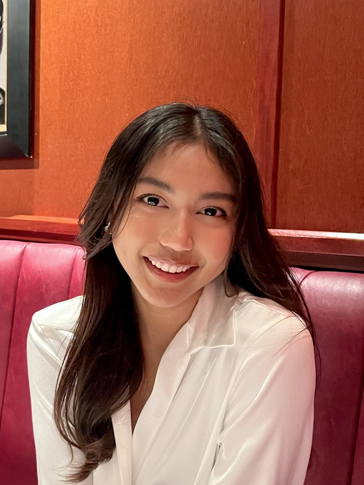
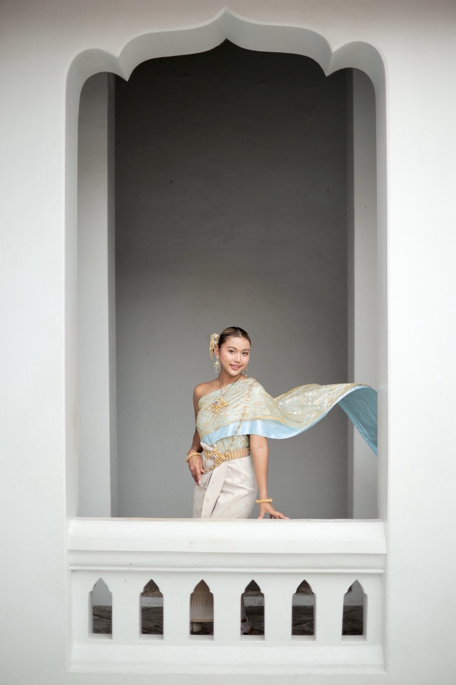

Education
University of Central Florida
B.S. Statistics · Expected 2028
Thammasat University
B.A. British and American Studies
I'm a Statistics student at the University of Central Florida, interested in using data to answer real-world questions and make better decisions.

I'm originally from Thailand and now live in Orlando, Florida. Growing up in Thailand and experiencing life in the United States have shaped the way I see the world. I enjoy learning from different cultures, meeting people, and trying new things. Outside of school, I love cooking, especially food that reminds me of home. I also enjoy visiting theme parks. While waiting in lines for rides, I started wondering how parks predict wait times, how crowd levels change throughout the day, and how data could help improve the guest experience. That curiosity helped spark my interest in predictive analytics. I'm now studying Statistics at the University of Central Florida, where I'm learning how to turn questions like these into analyses and meaningful insights.
Curious, adaptable, and creative. I love cooking, exploring new places, visiting theme parks, and learning about people from different backgrounds.
What I’m learningStatistical methods, probability, hypothesis testing, ANOVA, R, and programming.
Where I’m headedPredictive analytics and data science, especially forecasting theme-park wait times and helping organizations make better decisions.
My Thai heritage is an important part of who I am. I love traditional Thai clothing, food, and celebrations, and I enjoy sharing my culture while discovering others. These photos capture a part of home that I carry with me wherever I go.

University of Central Florida
B.S. Statistics · Expected 2028
Thammasat University
B.A. British and American Studies
Starbucks
Barista · Customer service, teamwork, and operations
Technical skills
R, statistical analysis, Python, programming, and data visualization
Resume PDF included.
Two statistical analysis projects completed using analysis of variance (ANOVA).
Analyzed resting heart rates for nonsmokers, light smokers, and heavy smokers using one-way ANOVA, variance tests, diagnostic plots, and Tukey HSD in R.
Finding: The three smoking groups showed statistically significant differences in mean resting heart rates.
View project details ↗Tested whether location, service type, or their interaction influenced oil-change prices across three cities using two-way ANOVA in R.
Finding: Neither main effect nor the interaction was statistically significant at the 5% level.
View project details ↗